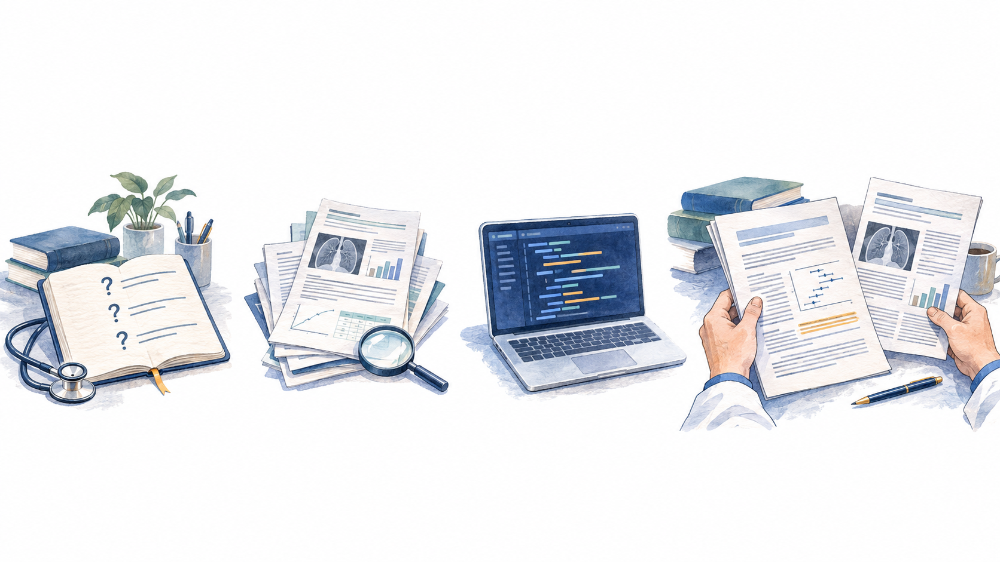

실습 환경 준비
Windows 또는 Mac 노트북에서 파일을 다루는 Codex 작업을 엽니다.
- 공식 데스크톱 앱을 설치하거나 업데이트하고 본인 계정으로 로그인합니다.
- Codex 작업에서 로컬 폴더를 선택할 수 있는지 확인합니다.
- 사용 가능한 모델과 한도를 확인합니다. 처음에는 가벼운 설정으로 시작하고, 비평할 때만 추론 수준을 올립니다.
앱 명칭·메뉴 위치·모델 목록은 계정과 버전에 따라 다를 수 있습니다. 이 강의는 노트북의 로컬 폴더 작업을 기준으로 진행합니다. 준비가 안 되면 2인 1조 또는 강사 예제로 따라옵니다.
자료를 넣기 전에
오늘은 공개 논문과 합성 데이터만 사용합니다. 환자 자료와 심사 의뢰를 받은 기밀 원고는 넣지 않습니다.
웹 ChatGPT에서 본인 계정으로 로그인한 뒤 설정 → 데이터 제어에서 학습 사용 설정을 확인합니다. Codex 환경의 추가 문맥을 학습에 포함하는 설정은 별도이므로 함께 확인합니다. 학습을 꺼도 기관의 반출·보관·전송 규정이나 심사 기밀 의무를 대신하지 않습니다.
OpenAI 데이터 제어 안내 · 2026-11-15 확인
실습 폴더 열기
빈 작업 폴더 하나를 만들고 아래 ZIP 두 개를 받습니다.
그 폴더를 Codex에서 열고 아래 요청을 실행합니다. 직접 압축을 풀어도 되며, AGENTS.md가 있는 폴더를 열었는지 확인합니다.
이 폴더에서 paper-workshop-1128.zip과 paper-workshop-1128-supplement-20261115.zip을 찾아줘. 기존 파일을 덮어쓰지 않도록 확인한 뒤 압축을 풀어줘. paper-workshop-1128 안에 실습보충자료 폴더를 두고, 같은 이름 폴더가 겹쳐 있는지 확인해줘. 도구 폴더의 AGENTS.md, 시작하기.md, .agents/skills가 실제로 있는지 확인해줘. 시작하기 안내와 ⑤ 인용 검증·⑥ 심사자 비평을 읽을 수 있는지 알려줘. 보충자료의 SYNTHETIC_IBS.csv와 plan.md가 있는지도 확인해줘. 원래 ZIP과 다른 파일은 그대로 두고, 마지막에 내가 열어야 할 폴더 경로를 알려줘.
준비 완료의 기준
paper-workshop-1128/AGENTS.md와시작하기.md가 보입니다.- ⑤ 인용 검증·⑥ 심사자 비평을 찾을 수 있습니다.
실습보충자료/SYNTHETIC_IBS.csv와plan.md가 있습니다.
도구 개수만으로 성공을 판단하지 않습니다. 압축을 풀 때 같은 이름 폴더가 겹쳐 생겼다면 안쪽의 실제 도구 폴더를 선택합니다. 마지막에는 paper-workshop-1128 자체를 새 작업 폴더로 엽니다.
도구 안의 시작 안내가 이 페이지와 다르면 이 페이지와 보충자료의 순서를 따릅니다. 오늘은 공개 논문과 합성 자료만 사용하며, 자신의 미공개 원고를 열거나 논문 작성 전 과정을 실행하지 않습니다.
오늘 할 일만 고르기
전체 과정을 처음부터 돌리지 않고, 인용 검증과 원고 비평을 골라 시작합니다.
시작하자. 현재 작업 폴더와 시작하기 안내를 확인해줘. 오늘은 골라 타기로 ⑤ 인용 검증과 ⑥ 심사자 비평을 할 거야. 시작하기.md의 이전 안내와 다르더라도 공개 자료와 실습보충자료만 사용해줘. 미공개 원고를 요구하거나 전체 파이프라인을 시작하지 마. 각 실습은 제공한 주장 세 개와 공개 초록 범위로 13분 안에서 진행할 거야.
인용 검증표
문헌이 있는지, 주장을 지지하는지 따로 기록합니다.
원고의 약점 메모
지적의 개수보다 위치와 근거를 봅니다.
다시 실행할 코드
합성 자료에서 표·그림·실행 기록을 남깁니다.
워크숍 파이프라인은 연구 질문부터 원고 검토까지 이어지는 작업 순서입니다. 오늘은 그중 세 가지 작업을 골라 연습합니다.
워크숍 파이프라인의 확인 절차
주장과 근거를 연결하고, 숫자를 다시 계산하고, 수정 뒤의 파일을 확인합니다.

| 확인 단계 | 남길 기록 | 저자가 확인할 부분 |
|---|---|---|
| 주장과 원문 대조 | 검토한 문장, 출처, 원문 위치와 판정 이유 | 출처가 있다는 사실과 그 출처가 문장을 뒷받침한다는 판단을 구분합니다. 기록에 빠진 주장은 따로 확인합니다. |
| 보고 수치 재계산 | 원고에 적힌 숫자 사이의 계산 관계와 재계산 결과 | 원자료 재분석이나 분석 방법의 타당성 판단을 대신하지 않습니다. |
| 수정 후 다시 확인 | 바뀐 파일, 영향을 받는 결과와 재검토 기록 | 수정 전 검사 결과를 그대로 가져오지 않습니다. 현재 파일로 어디까지 다시 확인했는지 봅니다. |
실습 도구가 모든 파일 변경을 감지하거나 자동으로 재검사하는 것은 아닙니다. 파일을 고친 뒤에는 08절의 요청으로 다시 확인합니다.
저자가 판단하는 시점
연구 질문을 정할 때, 검토 의견을 받아들일 때, 수정 원고를 공저자와 확인할 때, 제출본을 확정할 때 저자가 판단합니다. 어떤 자료를 보고 왜 결정했는지, 아직 확인하지 못한 것은 무엇인지 함께 남깁니다.
여러 모델이 같은 의견을 내도 원문 확인을 대신할 수 없습니다. 과거 작업의 검색·AI 사용 기록이 없다면 추정해 채우지 않고, 기록이 없는 범위를 표시합니다.
실습 ① 인용 검증
DOI가 맞아도 그 문헌이 내 주장을 뒷받침하는지는 따로 확인합니다.
아래는 연습을 위해 만든 주장입니다. 모두 옳다는 전제가 아닙니다.
- Böhn 등의 2015년 시험에서 저포드맵 식이는 전통적 IBS 식이 조언보다 우월했다.
- 4주 뒤 증상 점수가 50점 이상 감소한 비율은 저포드맵군 50%, 비교군 46%였다.
- 통계적으로 유의한 차이가 없었으므로 두 방법은 동등하다고 입증되었다.
Böhn et al. Gastroenterology. 2015;149:1399–1407.e2. PMID 26255043 · 공개 초록과 원문 연결
실습보충자료/01_인용검증_예제.md의 연습용 주장 3개만 검토해줘. 전체 참고문헌 점검이나 원고 작성 전체 절차는 시작하지 마. 문헌의 실재·서지, 철회/정정 상태, 각 주장의 근거 지지를 나누어 확인해줘. 읽은 원문 또는 초록의 위치·판정 이유·한계·다음 행동을 검증표로 남겨줘. 전문을 읽지 못하면 초록 확인만 했다고 표시하고 추정으로 채우지 마. 확인한 자료와 확인 날짜를 기록하고, reference-check.md로 저장해줘.
| 주장·위치 | 원문 위치·확인 범위 | 판정과 이유 | 다음 행동 |
|---|---|---|---|
| 검토한 문장 | 초록 또는 전문·표·문단 | 지지 / 불일치 / 미확인 | 저자가 확인할 것 |
검증 뒤 해설 보기
- 이 결과로 우월성을 주장할 수 없습니다.
- 초록의 비율과 일치하며, 해당 비교의 P값은 .72입니다. 표본과 4주라는 기간을 함께 기록합니다.
- 유의한 차이 미확인은 동등성 입증과 다릅니다. 별도의 설계와 허용 범위가 필요합니다.
전문을 열지 못했으면 초록 확인으로 남깁니다. 철회·정정 상태는 실습 시점에 따로 조회하고 기록합니다.
실습 ② 원고 비평
방법·통계, 주장·근거, 임상적 의미를 나누어 읽습니다.
앞 실습의 공개 논문과 연습 문장을 사용합니다. 전문을 읽지 못하면 초록 범위의 비평으로 제한합니다. 한 모델의 세 관점은 서로 독립적인 심사자 세 명과 같지 않습니다.
앞 실습의 Böhn 2015 논문 공개 초록·원문 링크와 01_인용검증_예제.md의 세 연습 문장을 사용해줘. 전문을 읽지 못하면 초록 범위의 비평이라고 먼저 적고, 없는 방법·통계 정보를 추정하지 마. 초록에 정보가 없다는 이유만으로 연구의 결함이라고 단정하지 마. 원고 작성 전체 절차나 여러 심사자를 동시에 실행하는 긴 작업은 시작하지 마. 방법·통계, 주장·근거, 임상적 의미를 각각 살펴봐줘. 가장 중요한 약점부터 원문 위치·구체적 이유·근거·수정안을 적어줘. 확인하지 못한 자료는 표시하고, 근거 없이 지적 개수를 채우지 마. 저자가 결정해야 할 질문과 채택·보류 이유를 적을 칸을 남기고 critique.md로 저장해줘.
- 원문에 실제로 있는 문제인지 확인합니다.
- 중요한 지적부터 채택·보류 이유를 적습니다.
- 지적이 없다는 결과도 범위·근거·한계가 분명하면 받아들입니다.
여러 모델이 같은 말을 해도 정답으로 처리하지 않습니다. 한 모델만 제기한 문제도 원문 근거가 있으면 확인합니다.
합성 자료로 작은 분석 도구 만들기
자료와 분석 계획을 고정한 뒤 코드가 실제로 만든 결과를 확인합니다.
120행
가상 A·B군 각 60행
실제 환자 자료 아님
기저·4주 점수
시드 20261128
분석 계획은 plan.md
같은 입력
다시 실행한 결과와
코드·기록을 대조
실습보충자료의 SYNTHETIC_IBS.csv와 plan.md를 먼저 읽어줘. 새 데이터를 생성하거나 시드를 바꾸지 말고, 계획대로 분석해줘. 4주 점수를 결과로 하고 집단·기저 점수를 넣은 선형모형을 사용해줘. 행 수·군별 수·결측·범위를 확인하고, 집단 B−A의 추정값·95% 신뢰구간·p값을 보고해줘. 표·그림·진단 그림·분석 코드·실행 기록을 my-results 폴더에 남겨줘. 기저 특성 표에 p값을 붙이지 말고, 강사 예제 파일은 덮어쓰지 마. SYNTHETIC 표시를 유지하고 임상 결론은 내리지 마. 결과 파일을 실제로 열어 확인하고 같은 입력으로 재실행했을 때 일치하는지도 알려줘.
생성 규칙과 해석 범위
기저 점수는 평균 280·표준편차 65의 난수를 100–450으로 제한했습니다. 4주 점수는 40 + 0.72 × 기저 점수 − 12 × 집단 + N(0,48)을 0–500으로 제한하고 반올림했습니다.
−12는 제한 전 생성식의 계수이며 발견한 치료 효과가 아닙니다. A·B는 실제 식이 중재명이 아닙니다. 120행은 교육용 선택이며 표본 수 계산 결과가 아닙니다.
강사 예제 결과 보기

B−A 보정 계수 −6.131점, 95% 신뢰구간 −23.770~11.508점, p=.4926. 같은 CSV·계획·환경에서 재현되는지 확인합니다.
이 예제의 계산 일치는 임상적 타당성이나 분석 계획의 적절성을 보증하지 않습니다.
결과에서 확인할 네 가지
- 입력 자료의 행 수·군별 수·결측·범위
- 집단 차이(B−A)의 방향·단위(점)와 95% 신뢰구간
- 잔차·진단 그림과 모형의 가정
- SYNTHETIC 표시, 코드·파일·환경 기록과 재실행 결과
고친 뒤 확인하고, 다음 작업으로 잇기
고친 파일과 검토 기록을 함께 남겨 다음 작업의 출발점으로 삼습니다.
- 현재 원고와 인용·표·분석 결과가 같은 버전인지 대조합니다.
- 바뀐 문장과 영향을 받는 숫자를 다시 확인합니다.
- 검색·판단·AI 사용·미확인 사항을 실제 기록한 범위만 남깁니다.
방금 수정한 파일을 기준으로 다시 확인해줘. 바뀐 주장·인용·표·본문 숫자와 영향을 받는 결과물을 찾아줘. 이전 검사 기록이 어느 파일 버전에 대한 것인지 대조해줘. 현재 파일로 다시 확인한 것과 아직 확인하지 못한 것을 구분해줘. 검사한 파일·시각·근거 위치·남은 문제를 verification-log.md에 남겨줘. 검사하지 않은 부분을 통과로 표시하지 마.
현재 폴더에서 이어서 작업하자. 실제 파일과 마지막 검사 기록을 읽고, 완료·진행 중·미확인을 나눠줘. 원고와 근거·수치·분석 결과의 버전이 맞는지 먼저 확인해줘. 새 작업 하나를 제안하고, 내가 결정할 사항과 아직 모르는 점을 알려줘.
자동으로 모든 진행 상황을 복원한다고 가정하지 않습니다. 마지막 기록과 실제 파일이 맞는지 먼저 확인합니다.
저자가 결정할 일
AI 사용을 공개하고, 근거를 직접 확인하며, 투고 저널의 규정을 따릅니다.
| 용도 | 허용 범위 |
|---|---|
| 원고 준비 보조 | 사용 공개·정확성 확인·저자 책임을 전제로 허용 |
| 외부 AI를 통한 동료심사 | 허용하지 않음 |
| 심사자·편집자 의견에 대한 저자 답변 | 허용하지 않음 |
Flanagin et al. JAMA. 2026. doi:10.1001/jama.2026.16613 · ICMJE 저자의 AI 사용 권고
도구 폴더에 응답서 작성 기능이 있어도 저널이 허용한다는 뜻은 아닙니다. 오늘의 공개 논문 비평과 실제 기밀 동료심사를 구분합니다.
AI가 검사를 통과시켰다는 상태와 제출·접수가 완료된 상태도 구분합니다. 인용·수치·임상적 해석의 최종 책임은 저자에게 있습니다.
강의 뒤에 해볼 일
문헌 검색의 과정을 남기기
[연구질문]의 핵심 문헌과 반박 근거를 찾아줘. 검색한 데이터베이스·검색어·검색 날짜·기간·선정 이유를 함께 기록해줘. 각 문헌의 저자·연도·저널·DOI 또는 PMID·핵심 결과·한계를 정리해줘. 실제 검색 기록이 없으면 체계적 문헌고찰이나 포괄적 검색으로 부르지 마. AI 답변을 근거로 쓰지 말고 확인 가능한 원문으로 연결해줘.
연구질문 예: IBS 환자의 저포드맵 식이는 전통적 식이 조언과 비교해 4주 증상 개선에 어떤 차이가 있는가? 검색 결과를 가져오면 인용 실재와 주장 지지를 다시 확인합니다.
다른 모델의 비평을 비교하기
사용이 허용된 공개 자료를 서로 독립적으로 검토해줘. 각 판단에 원문 위치와 근거를 적고, 일치와 불일치를 모두 남겨줘. 같은 지적은 중복 집계하지 말고 모델 수로 옳고 그름을 결정하지 마. 한 모델만 낸 지적도 근거가 있으면 확인하고, 최종 채택·보류는 내가 결정할 수 있게 해줘.
자료 제공이 허용되는 계정과 환경인지 먼저 확인합니다. 계정이 없는 분에게 추가 가입이나 결제를 요구하지 않습니다. 오늘은 한 모델에서 관점을 나누는 연습으로 충분합니다.
원고와 도구를 자기 작업에 맞추기
- Git 등으로 작업 시점의 사본을 남기고, 되돌릴 수 있는지 확인합니다.
- 도구의 SKILL.md를 읽어 입력·출력·확인 지점을 이해합니다.
- 증례보고·관찰연구·체계적 고찰에 필요한 단계와 보고지침을 따로 정합니다.
- 도구를 바꾸면 작은 공개 예제로 동작과 한계를 확인한 뒤 실제 작업에 적용합니다.
막히면 여기서 이어가기
| 상황 | 다음 행동 |
|---|---|
| 도구 지도가 안 보임 | AGENTS.md와 시작하기.md가 있는 폴더를 열었는지 확인합니다. |
| 보충자료가 안 보임 | 두 번째 ZIP을 받았는지 확인합니다. 급하면 CSV와 분석 계획을 각각 내려받습니다. |
| 원문 전문에 접근할 수 없음 | 초록 확인 범위로 표시하고 미확인 항목을 남깁니다. 내용을 추정하지 않습니다. |
| 사용량·로그인·설치 문제 | 현재 오류를 확인하고, 해결이 길어지면 짝과 함께하거나 강사 예제 결과로 진행합니다. |
| 클립보드 복사 실패 | 프롬프트를 선택해 Ctrl+C 또는 Cmd+C로 직접 복사합니다. 파일 다운로드는 ZIP으로 계속할 수 있습니다. |
| 분석 실행이 늦어짐 | 강사 예제의 입력·코드·결과를 열어 관계를 확인합니다. 자신의 실행 결과로 표시하지 않습니다. |
현재 폴더와 사용 가능한 도구를 먼저 확인해줘. 무엇을 실행했고 어디서 막혔는지 실제 오류와 함께 짧게 정리해줘. 확인하지 않은 기능을 불가능하다고 단정하거나, 실행하지 않은 결과를 완료라고 말하지 마. 권한·로그인·네트워크가 필요한 부분은 구분하고 안전한 다음 행동 하나를 제안해줘.
자료와 다음 행동
다음 연구에서 반복할 작은 작업 하나를 골라 보세요.
인용 세 개 확인, 비평 한 건 채택·보류, 작은 분석 재실행 중 하나를 자신의 다음 작업으로 정합니다.
120분 진행표
| 시각 | 진행 | 분 |
|---|---|---|
| 09:00–09:12 | 오프닝과 연구 질문 | 12 |
| 09:12–09:32 | 환경·폴더 준비 | 20 |
| 09:32–09:57 | 워크숍 파이프라인과 IBS 연구 질문 | 25 |
| 09:57–10:27 | 인용 검증·원고 비평 | 30 |
| 10:27–10:42 | 합성 데이터 분석 | 15 |
| 10:42–10:54 | 제출 전 확인·저자 책임 | 12 |
| 10:54–11:00 | 질문 | 6 |
11월 15일 개정 PPTX와 같은 실습 범위입니다. 도구 ZIP과 새 보충자료는 별개입니다. 다운로드한 파일은 오프라인에서 읽을 수 있지만 AI 실행·원문 검색에는 계정과 네트워크가 필요합니다.